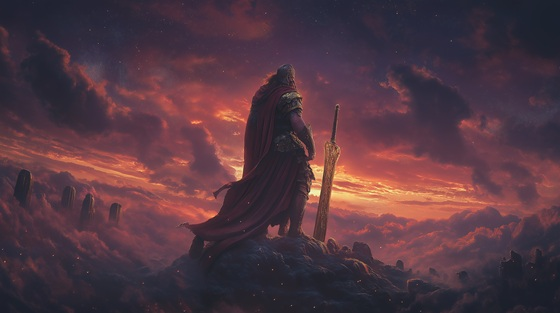

Cronus, the youngest of the twelve Titans, overthrew his tyrannical father Uranus at the urging of his mother Gaia, who could no longer bear the imprisonment of her children. Armed with a flint sickle forged by Gaia, Cronus castrated Uranus, ending his reign and claiming dominion over the cosmos.
But Uranus, in his dying breath, cursed Cronus—foretelling that he too would be overthrown by his own child. Terrified of this prophecy, Cronus swallowed each of his children at birth: Hestia, Demeter, Hera, Hades, and Poseidon, attempting to stop fate before it could rise.
This moment marks the beginning of a new tyranny, one born not from cruelty, but from fear. Cronus becomes the very force he overthrew—a king haunted by destiny and destined for downfall.
Sickle of the Reborn
I heard the cries beneath the stone
My brothers buried, skin to bone
I felt the weight of sky and scream
The curse of love, the death of dream
She placed the blade into my hand
And whispered, “Strike where gods once stand.”
Sickle of the reborn, forged in hate
I severed heaven to seal my fate
From father’s blood, from mother’s pain
I carved a world from sky’s remains
The stars bled red, the winds went still
I took his throne, I drank my fill
They crowned me king, the Titans roared
But fear still hung behind the sword
He screamed a curse with his last breath:
“You’ll bear a child who brings your death.”
Sickle of the reborn, forged in hate
I severed heaven to seal my fate
From father’s blood, from mother’s pain
I carved a world from sky’s remains
So one by one, I ate their cries
My children swallowed, gods denied
I’d rather rule a hollow reign
Than birth the fire that ends my name
RHEA (soft, broken): “You call this love?”
CRONUS: “I call it order. I call it rule.”
Sickle of the reborn, forged in hate
I severed heaven to seal my fate
From father’s blood, from mother’s pain
I carved a world from sky’s remains
But what is buried may still rise—
I see rebellion in their eyes